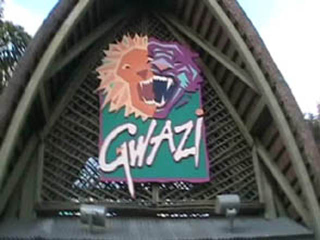

| |

Gwazi Review

We're here at Busch Gardens Tampa. For this review, we're going to have to go back in time to November 2007 when I rode this ride. After getting in the trains, we're off. First we went through some sort of predip sort of stuff. I'm not quite sure what it was. But it's fun for Pre Lifthill stuff. Then we headed straight for the lifthill. Now on Gwazi, the two lifthills were facing away from each other. So you couldn't really get in the coaster racing mood as you didn't have the other side to make enemies with. But for me, the other side of Gwazi was completely closed, so it's not like it really mattered as I wouldn't have been able to coaster race anyway. After turning away from the lifthill, we got a good look at the mess of track right in front of us. And before we knew it, we were heading down the first drop. We picked up a good amount of speed from the first drop, but it didn't really excite us. We then rose up into the wood and then started to turn around. We then dipped back towards the ground where we saw a very bright flash. That, ladies and gentlemen, was the on ride camera. Then after that, we headed through a little straight track before we twisted up into another hill. We then twisted down a little and headed straight into another turn. After that, we rose up and then twisted down a little. We may be doing a lot of stuff on the ride, but not much was really happening on the ride. We then went through a turn before dipping down into yet another banked turn. This banked turn eventually just lead up into another turn. We then went through another dip before going through a bunny hop (And no, you didn't get any airtime on this bunny hop). We then twisted up, before heading down into another banked turn. After that long banked turn, we dipped down before heading back up into another long turn. And after that, we headed straight for the brake run. While Gwazi was definetly an impressive looking ride, there just wasn't much to this ride. You didn't get to many forces nor does anything really happen. I'm sure it would've been better if I was coaster racing during my ride on Gwazi. But then again, I didn't think it was really that good of coaster racing if you aren't even facing each other during the lifthill. Gwazi may have looked impressive, but don't worry. You're not missing much. And besides, Iron Gwazi looks f*cking amazing! Can't wait to get back to Busch Gardens Tampa and ride that.
5/10
Location: Busch Gardens Tampa
Opened: 1999
Built by: Great Coasters International
Last Ridden: November 19, 2007
Gwazi Photos
Home
|